The First Stop for the Eb (International) this year just like the last years was a week on the winery Metzler. It started on a Sunday evening when the seven of us students and our two teachers (Robby, who does almost the whole trip with us and Achim, our physics teacher, who only stayed this week) met in a small village surrounded by wine-fields, at this point it was already getting dark so we did not do anything more than find out who gets which room and go to bed that day.
Monday till Friday all started with us getting up and eating breakfast at 7:15 am and then doing our work for school till 12, after that we drove to the Winery Metzler where we got really good lunch and Monday to Thursday, we got to work on the wine-field for at least a few hours which was quite exhausting but also fun (except for the one day where it was way too hot). After the work though it differed massively from day to day what we did, on two days we just bought something to eat and went to a nice viewing spot above the wine-fields where we then ate, then on one day we drove to a nearby village and ate at a Chinese restaurant After looking around the town-centre for a bit, then there was one day where we did a wine tasting for over 3 hours with 14 different wines from the Winery Metzler.
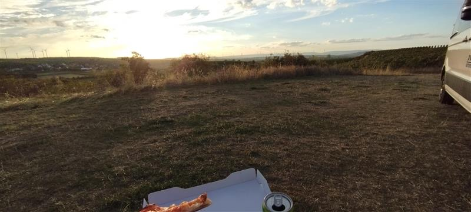
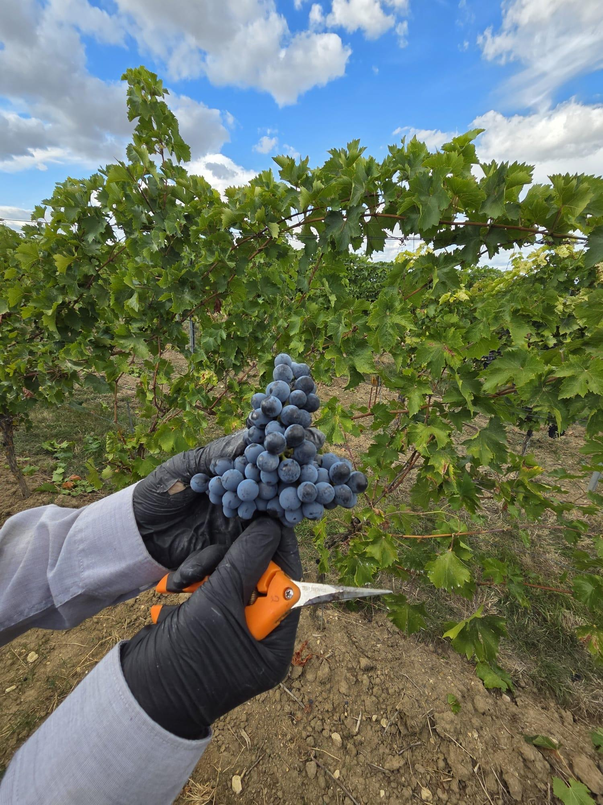
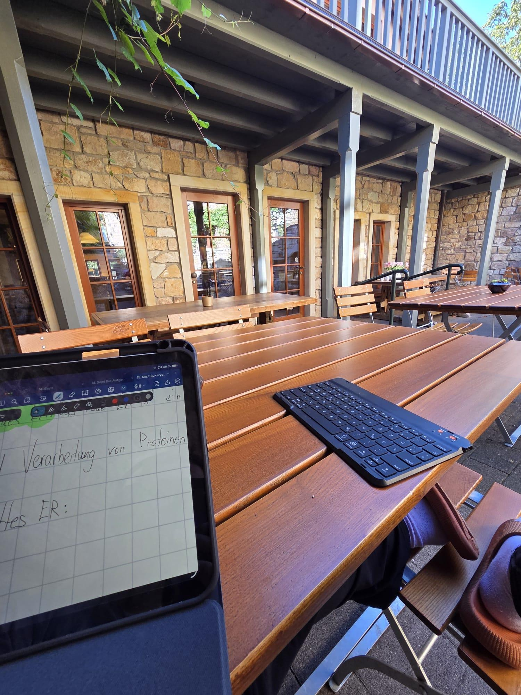
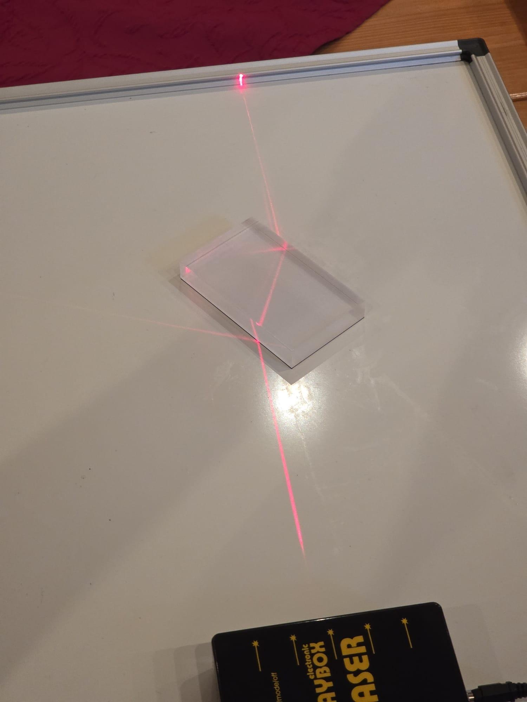
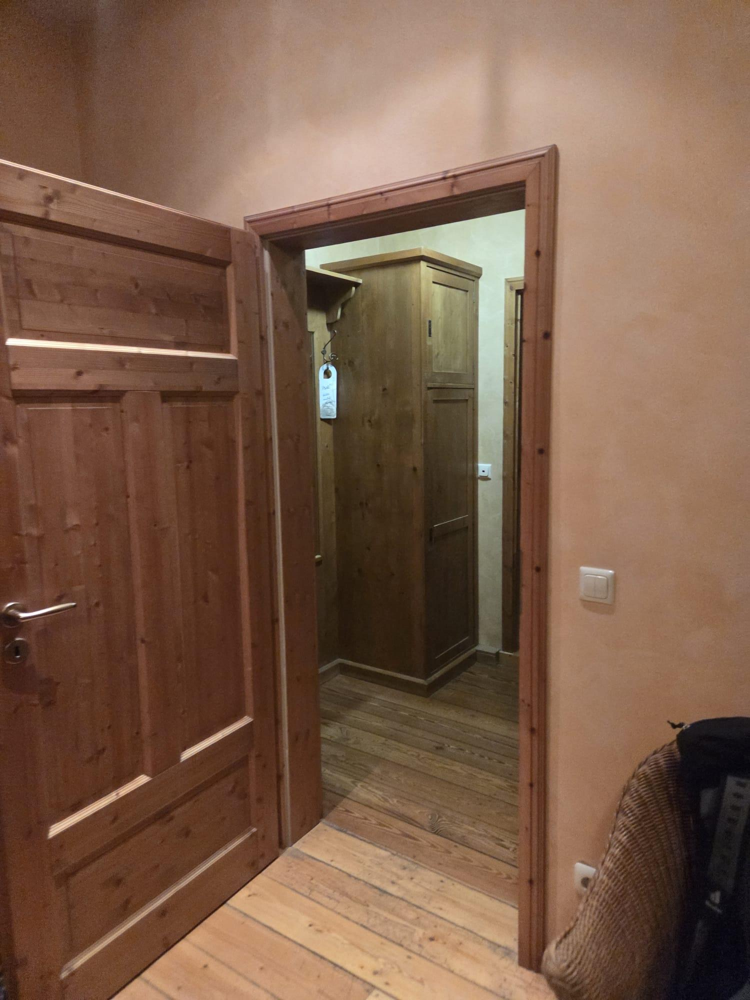
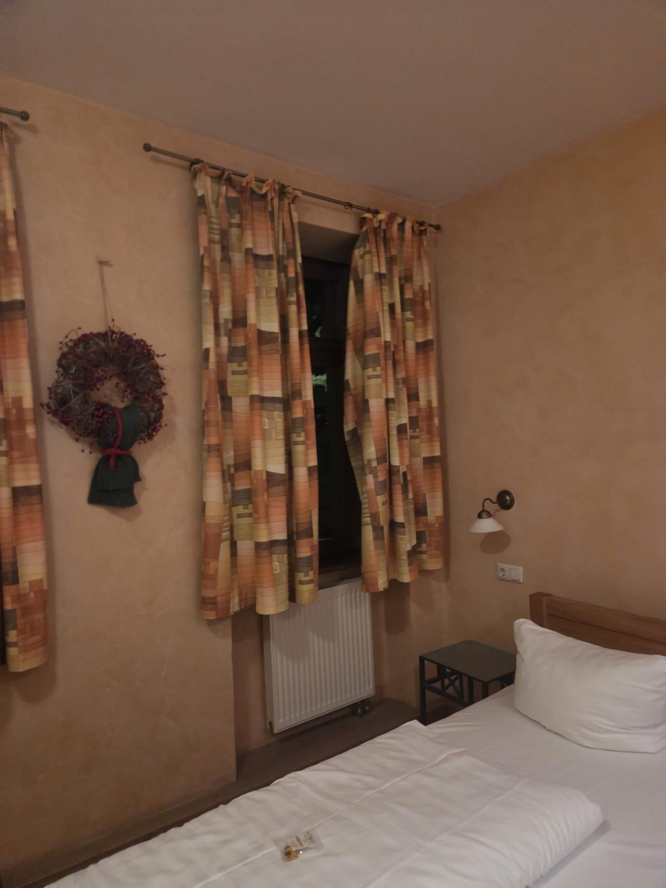
Friday, the last day, was a bit different, just like the other days it started with us getting breakfast Like the days before then we had to pack up and do our school work, then at noon we left our home for the last time, again getting lunch at the winery, but then we got shown a few of the other Production Steps and had the Chance to buy some wine which, luckily, Achim took with him to keep them cool as it was his last day with us, at the same time Jenny (our Biology and Sport teacher arrived who would keep traveling with us to the next Stop), and we set off on an at least eleven hour drive.
After visiting the winery Metzler, we were excited to embrace our journey to France. More precisely, our next destination was Moliets-et-Maa, a city located at southwest from France nearby the Atlantic. It was a stressful drive that took nearly whole night! Everyone couldn‘t fall asleep easily. Our teacher Robert and Jennifer took turn to drive. It was already 6:30 when we arrived in La Saint Martin, our camping place.
On the first day, we spent the morning exploring the entertainment facilities in this area. In the afternoon, all of us went to the beach to enjoy sunshine and seawater! Our students have come up with an idea and built a sandpile using hands. They stuck a branch into the pile and a sticker was put on it. A wonderful creation!
Our focus on the second day lay in surfing, which all of us had no experience with. On the afternoon, we had surfing lesson, learning how to have higher speed with help from sea waves and control your body to stand on the surfboard. This brought great joy to us! Many of us had already attempted for many times before having success.
In the Monday evening, we wandered in the forest, having picnics with baguette. On our way back, we walked over a sand area and met a river. We have recorded different sounds from nature for our music assignment. Both our eyes and ears have experienced enjoyment!
In these days, preparing food for three meals by ourselves became a new challenge. We have purchased necessary foods from supermarkets, prepared salats and wraps and cooked potatoes and spaghetti. Always thinking of preparing food brings stress. If we are able to plan everything in advance, we will feel secure and better! Overall, we have spent a joyful time on the beach! We are still excited for our new destinations!
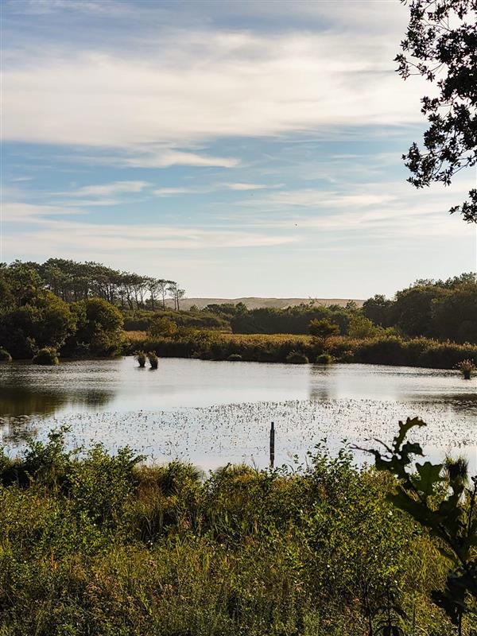
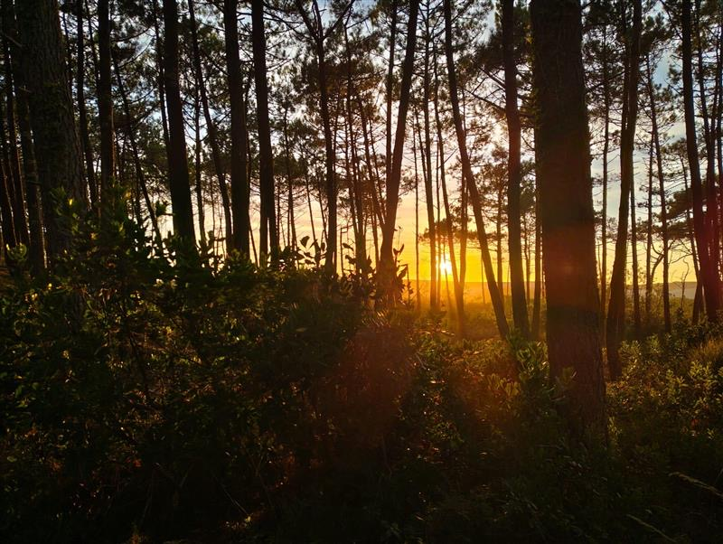
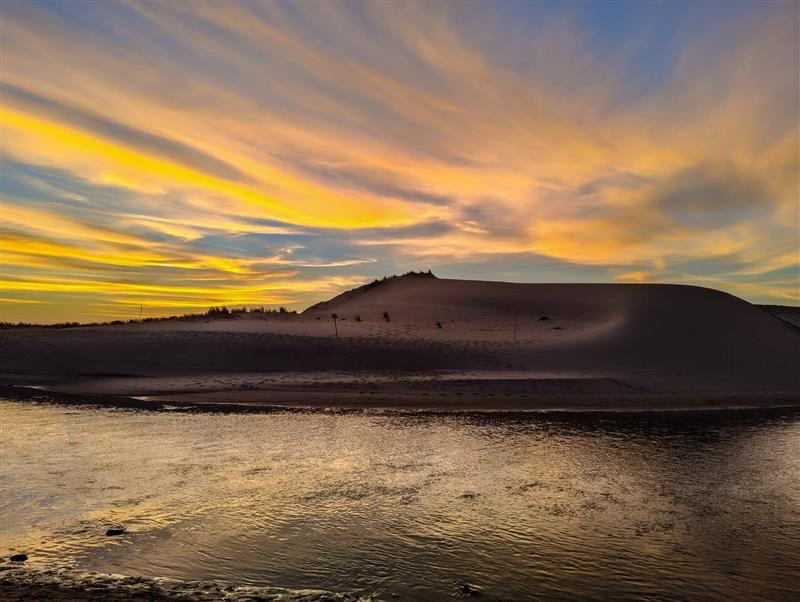
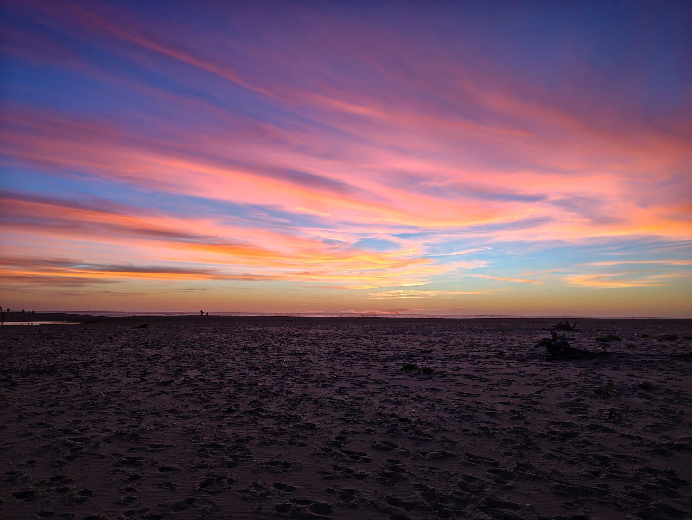
Our third destination took place in Spain. To be exact it started in Pamplona. We just stayed one night before our first big adventure in Spain. In the early morning we started packing our stuff and drove a few ours to a Canyon. We walked through the Canyon for a bit until we found a nice spot to eat. Some of us even decided to swim in the river in the middle of the canyon.
After that we drove a few more hours to our next destination "Rodellar". When we arrived we first bought our food we wanted to make for the rest of the week and a day later we started the week of by going canyoning. We first had to put on wetsuits to not get too cold in the canyon. It was a really special experience, because noone has ever done canyoning in our group except for Robby. The day after we went climbing on the mountains which was really fun, but the only problem was that only two people could climb at the same time. U could try belaying though if u werent climbing, what was nice.
The following day we went canyoning again with the same guide as the last time though we did a harder harder canyon this time with different holes and waterslides we could try. At the end there even were stones where you could jump from in the water. They reached from three to eleven meters. We all were brave enough to jump from from some of these rocks with some even jumping from eleven meters.
The next day we had a rest day and had to learn for the Biologie exam the day after. We were just chilling in the pool and asking Jenny out about Biologie. On tuesday we had our first exam of the school year. After school we would have had another day of climbing, but unfortunatly the weather wasnt great, so we had to cancel the trip and chilled a bit. The final day we packed our stuff, through the trash away and ate our last breakfast at this location and then it already went to our next stop, we all were looking forward to.
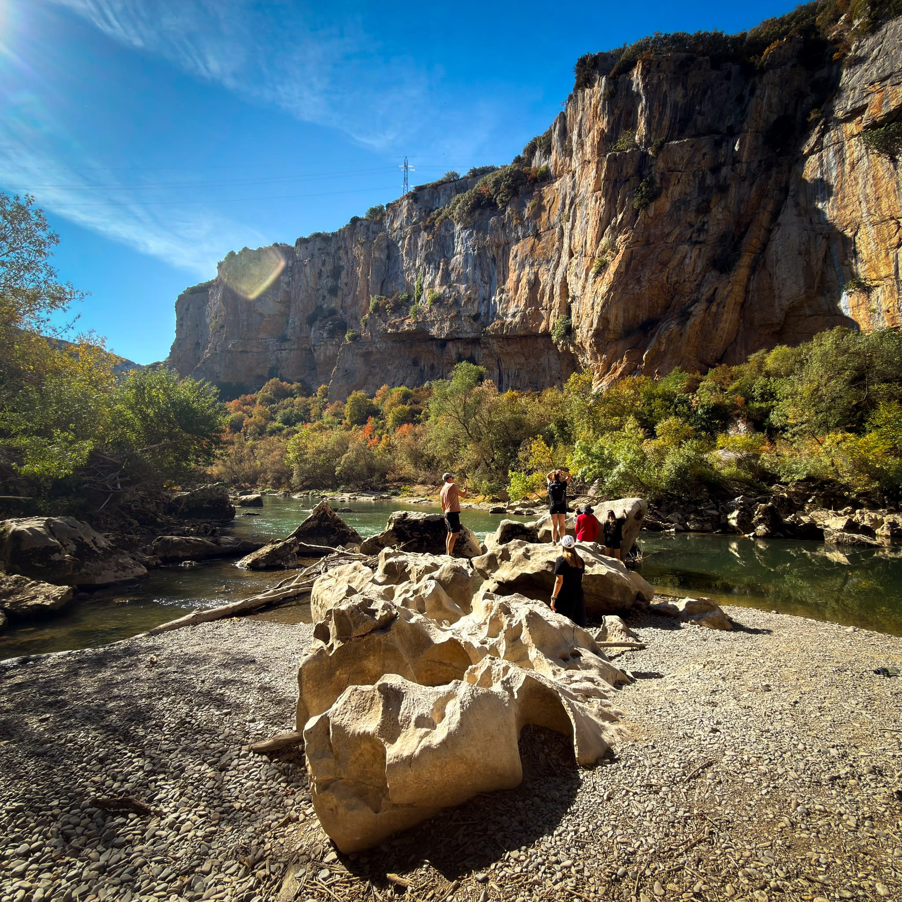
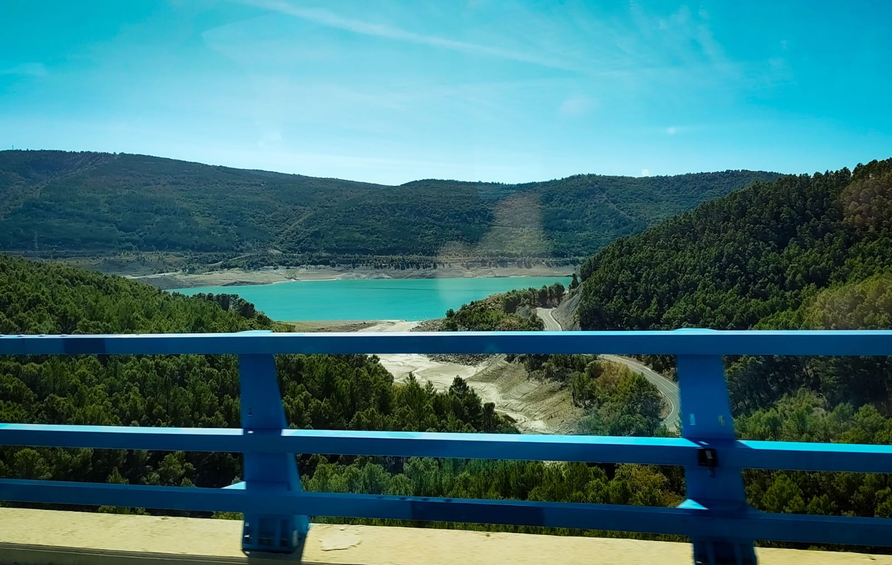
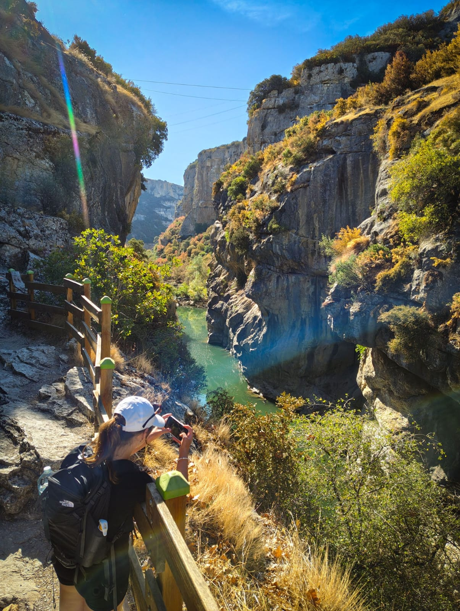
During our trip through Spain, we visited Montserrat, a famous place with an impressive monastery surrounded by beautiful mountains. We drove there by car and enjoyed the scenery along the way. The closer we got to our destination, the more we could see the unusual rock formations of the mountains. When we arrived, we first had a closer look at the monastery. The building was very impressive and had a long history. We explored the grounds and learned more about the importance of this place. What made it especially interesting was its location, as it was surrounded by high mountains and unusual rock formations. After that, we went hiking around the monastery. We were able to enjoy the landscape from different perspectives and had some great views of the mountains and the surrounding area. It was a nice opportunity to spend some time in nature and away from the busy cities. One special part of our stay was that we spent the night on the monastery grounds. However, we did not sleep inside the monastery itself, but in a separate building on the grounds. We shared a room with ten beds. Because of that, it was quite crowded, and there was not much space for our luggage and personal belongings. Nevertheless, it was a special experience to spend the night in such an unusual place. After our stay, we continued our journey by car to our next destination.
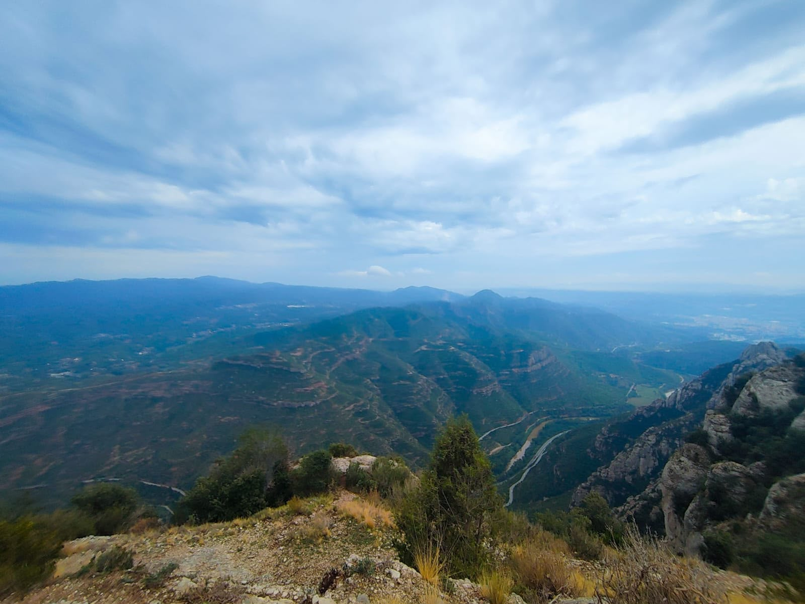
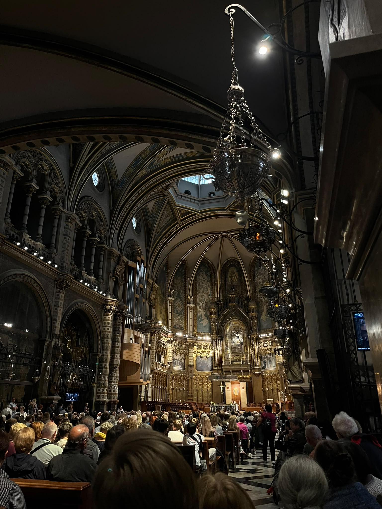
On another day, Barcelona was on our travel schedule. We walked to the train station and took the train from there to the city centre. This was more convenient than driving directly into the city, where there can be a lot of traffic and finding a parking space can be difficult. When we arrived in Barcelona, we were given a history assignment that required us to explore the city. We were divided into small groups and were allowed to move around quite freely. We could decide for ourselves how we wanted to spend the day, as long as we kept our assignment in mind. The different groups spent their free time in different ways. Some went shopping and looked around the many stores, while others visited sights or walked through the streets of the city centre. Some also took the opportunity to get something to eat and have a break. Barcelona was a lively city, and there was something to discover everywhere. There were many different ways to spend our time, so each group could follow its own interests. At the same time, we had to work on our history assignment, which helped us learn more about the city. After spending enough time in Barcelona, we walked back to the train station and took the train back. Afterwards, we continued by car to our next place of accommodation.
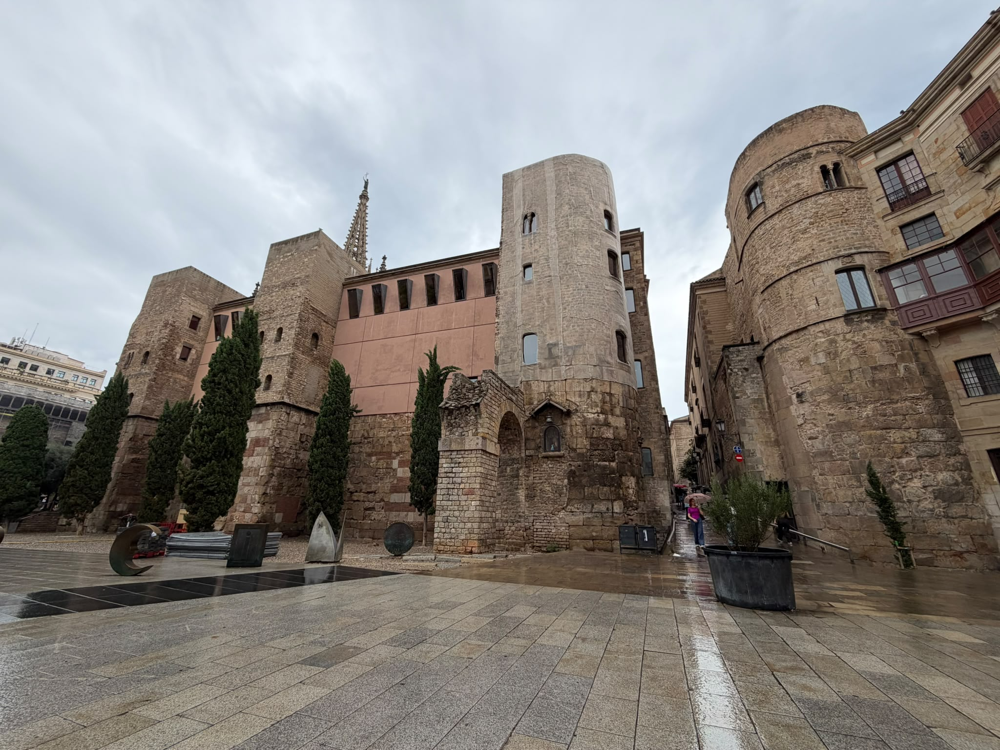
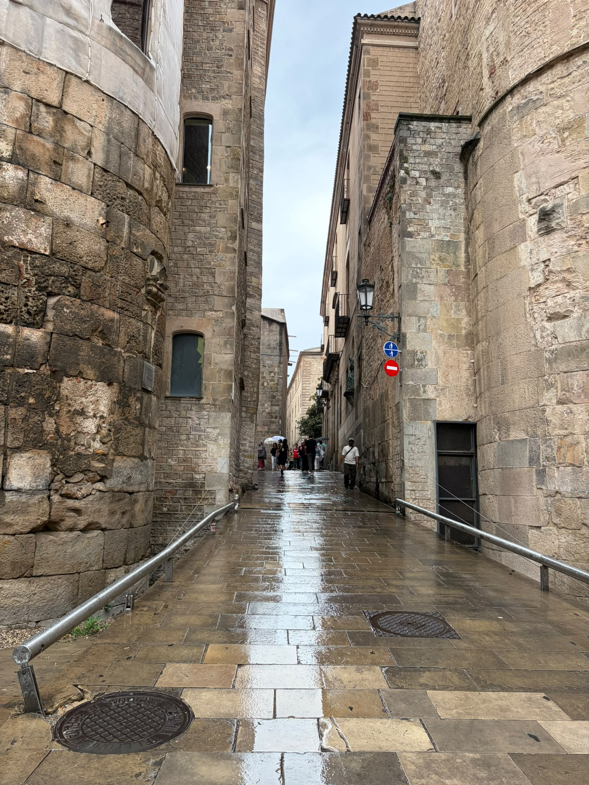
Another stop on our journey was Canet de Mar. Unfortunately, the weather was far from pleasant that day. It rained all day, and the weather was cold and uncomfortable. Because of this, we spent a lot of time in our small houses instead of going on longer trips or exploring the area. Due to the bad weather, we could not explore the town as we might have done if the sun had been shining. The constant rain made it unpleasant to spend a lot of time outside. Instead of walking around all day, we mostly stayed at our accommodation and spent time together there. Even though the weather was not very good, we still did something together in the evening. This meant that we could spend time as a group and end the day together. During a trip that lasts several weeks, it is not possible to be out exploring new places every single day. Overall, this day was quieter than some of the other days of our journey. The weather was quite unpleasant, but we made the best of the situation and spent the evening together.
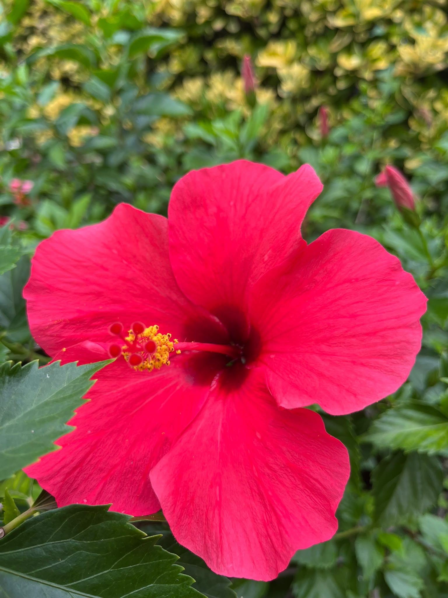
Later, we visited Barcelona for a second time. We walked to the train station and took the train from there to the city centre. Once we arrived, we split into small groups again and could decide for ourselves how we wanted to spend the day. At first, we were able to walk around the city centre, visit different places and enjoy the city. There were different ways to spend our time. Some went shopping and looked around the stores, while others preferred walking through the streets or getting something to eat. However, the weather became much worse during the day. A storm was expected, and we started to worry that we might not be able to leave the city centre later if the weather got even worse. That is why we decided to go back in the afternoon, even though we had originally planned to stay in Barcelona longer. We walked to the train station and took the train back so that we could return to our accommodation in time. In the evening, it rained very heavily. However, the storm was not as bad as we had expected at first. It was a little disappointing that we had to leave Barcelona earlier than planned, but we were glad that we had returned in time.
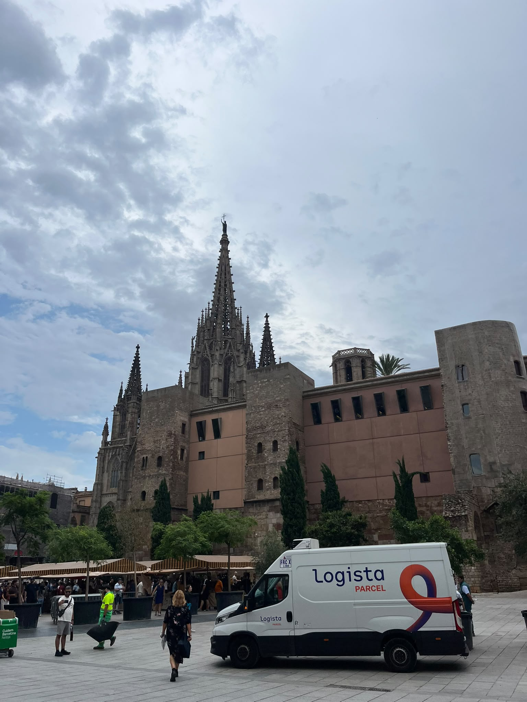
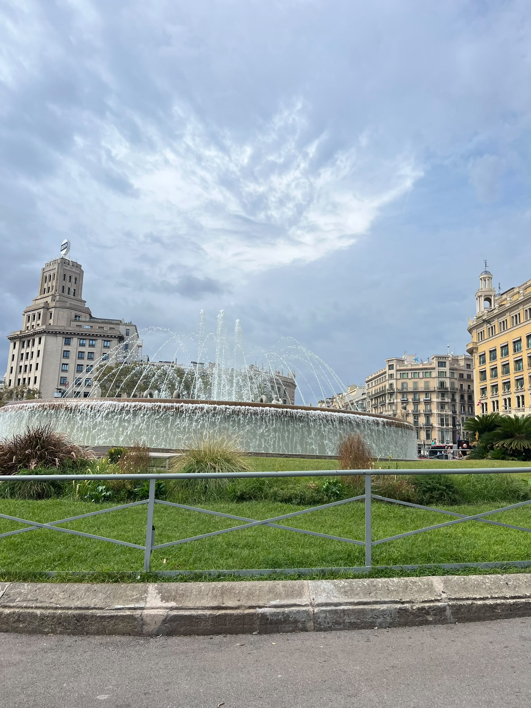
After our stay in Spain, our road trip continued to Carcassonne in the south of France, where we were ready to discover new places and have more exciting experiences.
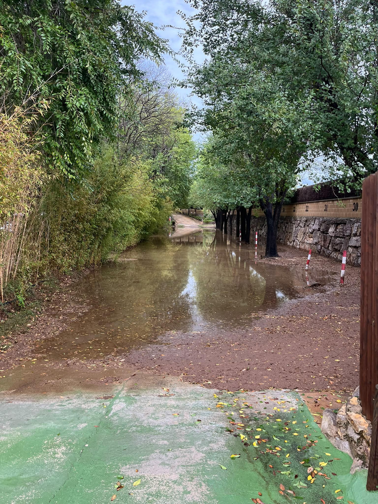
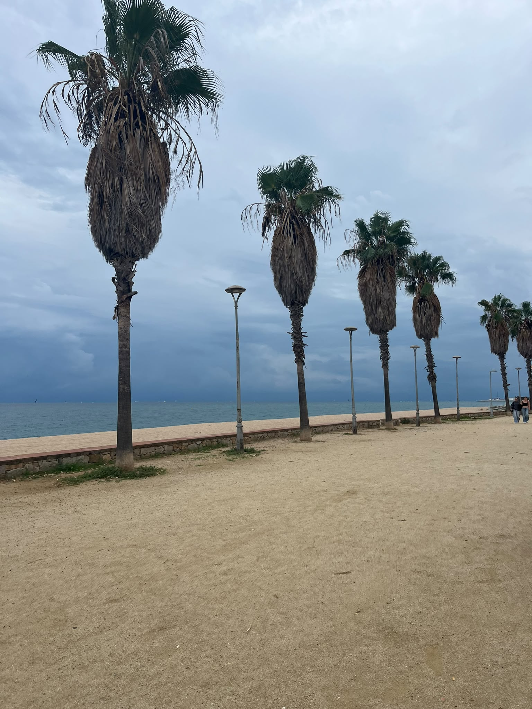
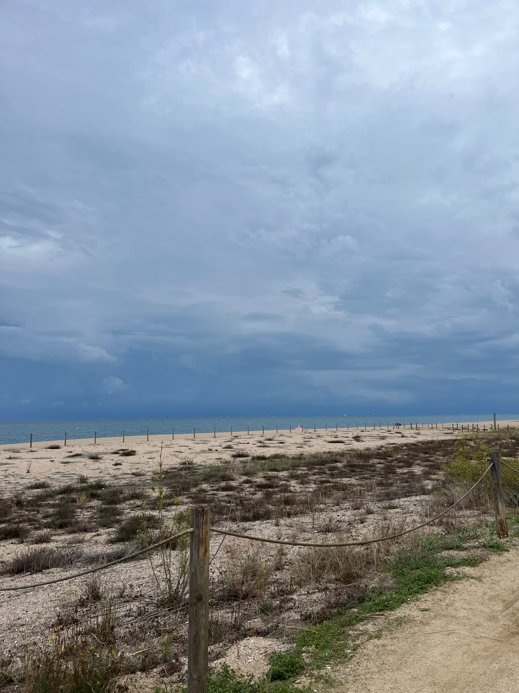